Algoritmo Geral de Atendimento e Triagem da Queixa Sexual
Baseado no Tratado de Ginecologia FEBRASGO (2ª edição, Capítulos 10, 11 e 12).
Visão Geral & Fundamentos Teóricos (FEBRASGO & DSM-5)
1. Modelos da Resposta Sexual Humana:
- Modelo Tradicional Linear (Masters & Johnson, 1966 / Helen Kaplan, 1979): Descreve fases sucessivas e biológicas: Desejo → Excitação → Platô → Orgasmo → Resolução. Embora útil didaticamente, aplica-se melhor à fisiologia masculina ou a relacionamentos recentes.
- Modelo Circular Biopsicossocial de Rosemary Basson (2000 - Adotado pela FEBRASGO): Reconhece que muitas mulheres em relacionamentos estáveis iniciam a interação a partir de um estado de neutralidade sexual. A motivação primária inicial é a busca por intimidade afetiva, cumplicidade ou carinho. Mediante estímulo erótico adequado, surge o desejo responsivo, que culmina em excitação, bem-estar e feedback positivo, realimentando o ciclo. Portanto, a ausência de desejo espontâneo na presença de desejo responsivo satisfatório NÃO constitui doença.
| Modelo Teórico | Autor & Ano | Conceito Principal | Implicação Clínica na Prática |
|---|---|---|---|
| Quatrifásico Linear | Masters & Johnson (1966) | Excitação → Platô → Orgasmo → Resolução | Foco estritamente fisiológico e vascular genital; não contemplava o desejo prévio. |
| Trifásico Linear | Helen Singer Kaplan (1979) | Desejo → Excitação → Orgasmo | Introduziu o Desejo como fase autônoma e essencial; modelo mais cobrado em provas. |
| Circular Biopsicossocial | Rosemary Basson (2000) | Neutralidade → Intimidade → Desejo Responsivo → Satisfação | Padrão-ouro FEBRASGO: normaliza a falta de desejo espontâneo e valoriza a intimidade emocional. |
2. Neurobiologia da Resposta Sexual: A regulação central do desejo e da excitação baseia-se no equilíbrio dinâmico entre dois sistemas neuroquímicos centrais:
- Sistemas Estimuladores (Pró-sexuais): Dopamina (recompensa e motivação), Noradrenalina (atenção e alerta erótico), Ocitocina (afeto e vínculo) e Melanocortinas.
- Sistemas Inibidores (Anti-sexuais): Serotonina (ativação de 5-HT2A e 5-HT2C inibe a liberação de dopamina), Prolactina (período refratário) e Opioides endógenos.
3. Classificação dos Transtornos Sexuais (DSM-5 & FEBRASGO):
- Transtorno do Desejo Sexual Hipoativo / Excitação Feminina (TDSH / TIESF): Redução ou ausência persistente (≥ 6 meses) de pensamentos, fantasias e receptividade com sofrimento.
- Transtorno do Orgasmo Feminino (Anorgasmia): Dificuldade extrema, atraso ou ausência de orgasmo após fase excitatória adequada.
- Transtorno da Dor Gênito-Pélvica / Penetração (TDGPP): Fusão diagnóstica da Dispareunia (dor ao coito) e do Vaginismo (contração espástica involuntária dos elevadores do ânus que impede a penetração).
Roteiro Semiológico Padronizado: Caracterização das Queixas Sexuais
- Frequência & Espontaneidade: Avaliar presença de pensamentos eróticos espontâneos durante a semana e resposta ao convite da parceria. É situacional (apenas com o parceiro atual) ou generalizada (em qualquer contexto ou masturbação)?
- Intensidade & Angústia: Graduar o sofrimento pessoal. Atenção: se a mulher não tem desejo, mas está satisfeita e sem angústia, NÃO se diagnostica patologia.
- Duração: Critério temporal rígido de ≥ 6 meses. É primária (vitalícia) ou adquirida (surgiu após período de função sexual normal)?
- Sintomas & Queixas Associadas: Fadiga, anedonia, distúrbios do sono, alterações do humor, conflitos conjugais ou uso de psicofármacos (ISRS).
- Frequência: Ocorre em todos os coitos ou apenas quando o tempo de preliminares é insuficiente?
- Intensidade: Causa desconforto leve, queimação, atrito doloroso de lixa ou microfissuras de fúrcula com sangramento após o ato?
- Duração: Persistência contínua por ≥ 6 meses.
- Sintomas Associados: Dispareunia de introito, disúria pós-coital, queixas de ressecamento no climatério / amamentação (Síndrome Geniturinária da Menopausa).
- Localização Topográfica: Superficial (introito/vestíbulo) → suspeitar de vestibulodinia provocada, atrofia urogenital ou fissuras. Profunda (fundo de saco/pelve) → suspeitar de endometriose profunda, DIP crônica ou miomatose.
- Intensidade & Impedimento: Avaliar pela Escala Visual Analógica (EVA 0 a 10). A dor impede totalmente qualquer penetração (coito, dedo, espéculo, tampão)? No vaginismo grave, há adução reflexa das coxas e elevação das nádegas.
- Duração: Primária (desde a menarca/primeira tentativa de penetração na vida) vs Secundária (surgiu após parto com laceração/episiotomia, infecção, cirurgia ou trauma).
- Sintomas Associados: Medo fóbico e antecipatório da dor, ansiedade de desempenho, contratura involuntária do assoalho pélvico e hipertonia miofascial.
Diagrama Geral de Triagem & Decisão Clínica DSF

Anamnese em Sexologia & Exame Físico Dirigido
Propedêutica baseada no Tratado FEBRASGO (Capítulo 11), modelo PLISSIT e manobras do exame físico especializado.
Framework de Atendimento: Modelo PLISSIT & Análise dos 4 Ps
O médico toma a iniciativa de perguntar sobre a vida sexual: "Muitas mulheres com sua condição têm dúvidas sobre sexualidade. Como está essa área para você?" Valida a queixa e autoriza a paciente a falar sem vergonha.
Fornecimento de informações básicas e esclarecimento de mitos anatômicos e fisiológicos (ex.: explicar o modelo circular de Basson, a normalidade da necessidade de estimulação do clitóris e as alterações da menopausa).
Sugestões práticas direcionadas à queixa: uso de lubrificantes adequados, estímulo de preliminares, exercícios de relaxamento do assoalho pélvico, mudanças de posições coitais ou troca de medicamentos causadores.
Encaminhamento para terapia sexual especializada / psicoterapia individual ou de casal e fisioterapia pélvica quando a disfunção decorre de traumas profundos, conflitos severos ou vaginismo refratário.
- Fatores Predisponentes: Educação repressiva, histórico de abuso sexual na infância, desinformação anatômica, crenças de culpa.
- Fatores Precipitantes: Parto traumático com laceração/episiotomia, infecção urogenital aguda, cirurgias pélvicas, infidelidade, menopausa, início de antidepressivo.
- Fatores Mantenedores/Perpetuadores: Medo antecipatório da dor, ansiedade de desempenho (auto-observação), perda de atração pelo parceiro, falta de comunicação.
- Fatores Protetores: Bom vínculo afetivo com o parceiro, motivação mútua para o tratamento, ausência de comorbidades psiquiátricas graves.
Semiologia do Exame Físico Dirigido em Sexologia
Avaliar pilificação, trofismo dos grandes e pequenos lábios, coloração, presença de eritema, fissuras na fúrcula posterior, perda de elasticidade vaginal, estenose do introito e retração do capuz clitoridiano (sinéquias/esmegma). Pesquisar sinais de Líquen Escleroso (lesões em 'oito', pele em papel de cigarro e apagamento anatômico).
Fundamental para o diagnóstico de Vestibulodinia Provocada. Com a ponta úmida de um cotonete, toca-se suavemente em sentido horário em pontos do vestíbulo (posições de 1h a 12h, especialmente entre 4h e 8h próximas aos óstios de Bartholin). A presença de alodinia (dor viva desproporcional) fecha os critérios de Friedrich.
Ao toque unidigital suave, palpa-se bilateralmente o músculo elevador do ânus (puborretal e pubococcígeo). Avalia-se dor à palpação profunda (pontos-gatilho miofasciais), capacidade de relaxamento voluntário e graduação do tônus pela Escala de Oxford Modificada (0 a 5). No vaginismo, nota-se espasmo reflexo impeditivo.
Deve ser realizado apenas se tolerado, com espéculo virginal/pequeno lubrificado com soro ou gel à base de água morna. Avaliar pregueamento e rugosidades vaginais (trofismo), secreções anormais e pH. No toque bimanual, checar dor à mobilização do colo (DIP) e nódulos endurecidos dolorosos em ligamentos uterossacros (Endometriose profunda).
Transtorno do Desejo Sexual Hipoativo (TDSH / TIESF)
Deficiência ou ausência persistente de pensamentos, fantasias ou desejo de atividade sexual, com sofrimento pessoal (FEBRASGO Cap. 11 e 12).
Fundamentos Teóricos & Roteiro Semiológico do Desejo Hipoativo
O TDSH é a disfunção sexual mais prevalente no sexo feminino, acometendo até 30% a 40% das mulheres em consultas ginecológicas. Pode manifestar-se como perda de pensamentos eróticos, ausência de iniciativa e rejeição ou apatia diante das investidas da parceria.
| Eixo Avaliado | Característica Clínica | Investigação & Significado |
|---|---|---|
| Frequência | Ausência de pensamentos eróticos em todas as situações ou apenas no relacionamento. | Diferenciar TDSH Generalizado (ausente também na masturbação) de Situacional (restrito ao parceiro atual - componente conjugal predominante). |
| Intensidade | Grau de angústia subjetiva relatado pela paciente. | Sem sofrimento = ausência de transtorno (variação constitucional ou assexualidade). |
| Duração | ≥ 6 meses de evolução contínua. | Primário (ao longo de toda a vida) vs Secundário (adquirido após fase de vida sexual satisfatória). |
| Sintomas Associados | Fadiga crônica, insônia, fogachos, desânimo, queixas urinárias. | Rastrear hipotireoidismo, hiperprolactinemia, depressão, climatério e uso de medicamentos (ISRS, ACO com etinilestradiol). |
- 1. Psicoeducação & TCC de Casal (Nível 1): Primeira linha. Reestruturação de mitos, otimização da comunicação do casal e desconstrução da obrigação de desejo espontâneo.
- 2. Manejo Farmacológico na Pós-Menopausa:
• Tibolona (2,5 mg/dia VO): STEAR com ação estrogênica, progestogênica e androgênica. Melhora sintomas vasomotores, humor e libido (Nível 2).
• Testosterona Transdérmica: Indicada estritamente para mulheres pós-menopausa com TDSH comprovado, refratário a outras abordagens e após terapia estrogênica otimizada. Usar formulação tópica feminina (ex.: 0,5 g de gel a 1% = 5 mg/dia no abdômen) mantendo níveis séricos fisiológicos femininos. Contraindicada na pré-menopausa por falta de segurança a longo prazo. - 3. Farmacoterapia Não Hormonal:
• Bupropiona SR (150 a 300 mg/dia VO): Ação dopaminérgica e noradrenérgica. Excelente opção em mulheres com queixas associadas de desânimo ou TDSH induzido por antidepressivos serotoninérgicos.
• Flibanserina (100 mg VO ao deitar): Agonista 5-HT1A e antagonista 5-HT2A. Aprovada pelo FDA para pré-menopausa com TDSH generalizado adquirido. Efeitos adversos: sedação e hipotensão (evitar álcool concomitante).
Fluxograma de Decisão no TDSH

Disfunção da Excitação Sexual Feminina (DESF)
Incapacidade persistente de atingir ou manter resposta vasocongestiva genital (lubrificação) ou excitação subjetiva (FEBRASGO Cap. 10 e 12).
Caracterização Semiológica & Abordagem Clínica da Falha de Excitação
A falha de excitação pode ser subdividida em genital pura (falta de lubrificação física, com desejo mental preservado), subjetiva pura (ausência de sensação de prazer, apesar da lubrificação presente) ou combinada.
| Parâmetro Semiológico | Manifestação Clínica | Investigação Dirigida |
|---|---|---|
| Frequência | Falta de lubrificação reflexa em ≥ 75% dos contatos sexuais. | Avaliar se o tempo e o tipo de estimulação preliminar são adequados antes da tentativa de penetração. |
| Intensidade | Sensação de atrito mecânico ("lixa"), ardência, queimação e dor. | Pode desencadear dispareunia secundária e aversão sexual progressiva. |
| Duração | Presença crônica há mais de 6 meses. | Início súbito sugere trauma cirúrgico, radioterapia ou início de medicações anticolinérgicas/antidepressivas. |
| Sintomas Associados | Secura vaginal constante fora do coito, prurido vulvar, disúria e urgência miccional. | Quadro clássico de Síndrome Geniturinária da Menopausa (SGM) por hipoestrogenismo. |
- 1. Lubrificantes Íntimos Coitais: Uso imediato durante a relação. Preferir fórmulas à base de água ou silicone, com pH compatível (3,8 a 4,5) e osmolalidade fisiológica (< 380 mOsm/kg), evitando fórmulas hiperosmolares que causam lesão epitelial.
- 2. Hidratantes Vaginais de Longa Ação: Géis contendo ácido hialurônico, policarbofila ou policarboxílico, aplicados 2 a 3 vezes por semana no canal vaginal, independentemente da relação sexual, restaurando a hidratação tecidual básica.
- 3. Terapia Estrogênica Local (Padrão-Ouro no Hipoestrogenismo): Promestrieno 10 mg/g creme (ou óvulo) ou Estriol creme 1 mg/g. Aplicação diária por 14 dias (fase de ataque) seguida por 2 vezes por semana contínua (manutenção). Eficácia comprovada para restaurar rugosidades, vascularização e diminuir pH vaginal. Não requer associação com progestagênio.
- 4. Estímulo Erótico Mecânico & Fisioterapia: Uso de estimuladores/vibradores clitoridianos e treinamento do assoalho pélvico para aumentar o fluxo sanguíneo arteriolar pélvico.
Fluxograma de Manejo da Falha de Excitação / Lubrificação

Transtorno do Orgasmo Feminino (DOF / Anorgasmia)
Atraso persistente, ausência ou intensidade reduzida do orgasmo após fase adequada de excitação (FEBRASGO Cap. 10 e 12).
Roteiro Semiológico & Classificação da Anorgasmia
O orgasmo feminino fisiológico caracteriza-se por contrações rítmicas e involuntárias da musculatura perineal e do elevador do ânus (intervalos de 0,8 segundos), acompanhadas de descarga autonômica simpática e liberação maciça de ocitocina e endorfinas.
| Tipo de Anorgasmia | Definição Clínica | Causas Mais Frequentes | Abordagem Terapêutica |
|---|---|---|---|
| Primária (Vitalícia) | A mulher nunca atingiu o orgasmo na vida por qualquer forma de estímulo (coito, carícias ou masturbação). | Desconhecimento anatômico, culpa moral/religiosa, repressão sexual, ausência de masturbação prévia. | Treinamento de Masturbação Dirigida (Directed Masturbation - Padrão-Ouro), uso de espelho e vibrador. |
| Secundária (Adquirida) | Apresentava orgasmos normais no passado e perdeu a capacidade após determinado evento. | Medicamentosa (ISRSs, betabloqueadores), hipotireoidismo, cirurgias pélvicas com lesão de nervos pudendos, fadiga crônica. | Revisão da farmacoterapia (associação de bupropiona), tratamento da causa endócrina de base e psicoterapia. |
| Situacional | Atinge orgasmo com masturbação ou sexo oral, mas não durante a relação com o parceiro. | Estimulação inadequada pelo parceiro, falta de carícias clitoridianas, ansiedade de desempenho (espectadorismo). | Terapia sexual de casal, comunicação assertiva e inclusão de estimulação manual/vibrador durante o coito. |
- Autoexame Genital com Espelho: Reconhecimento visual da própria genitália, localização do clitóris, pequenos lábios e vestíbulo em ambiente privativo.
- Exploração Tátil Corporal & Genital: Toque exploratório suave sem meta imediata de atingir o orgasmo, identificando zonas de maior sensibilidade.
- Foco na Estimulação Clitoridiana: Uso de lubrificante e carícias circulares no capuz e glande do clitóris, ajustando ritmo e pressão ideais.
- Uso de Recursos Facilitadores: Introdução de vibradores clitoridianos de alta frequência para mulheres com limiar neurológico elevado.
- Compartilhamento com a Parceria: Inclusão gradativa do parceiro, orientando-o sobre as carícias e ritmos que demonstraram eficácia na fase individual.
Fluxograma de Abordagem do Transtorno do Orgasmo

Transtorno da Dor Gênito-Pélvica / Penetração (TDGPP)
Unificação diagnóstica da Dispareunia, Vaginismo e Vestibulodinia Provocada (DSM-5 e FEBRASGO Cap. 11 e 12).
Diagnóstico Diferencial: Vaginismo vs Vestibulodinia vs Dispareunia Profunda
| Entidade Clínica | Definição Fisiopatológica | Achados Semiológicos / Exame Físico | Tratamento de Escolha |
|---|---|---|---|
| Vaginismo | Contração espástica, recorrente e involuntária dos músculos do assoalho pélvico (elevador do ânus) ao tentar a penetração. | Inspeção normal; ao toque genital, nota-se adução forte das coxas, lordose lombar e impossibilidade total de introdução de dedo ou espéculo. | Fisioterapia Pélvica com dilatadores vaginais progressivos de silicone, biofeedback e TCC. Casos refratários: toxina botulínica no assoalho pélvico. |
| Vestibulodinia Provocada (VVD) | Hiperalgesia e alodinia neuropática localizada no vestíbulo vulvar, decorrente de proliferação de fibras nervosas livres (Critérios de Friedrich). | Cotton-Swab Test Positivo: dor intensa em pontada/queimação ao toque leve com cotonete no vestíbulo (entre 4h e 8h), eritema vestibular focal e ausência de vaginite infecciosa. | Higiene suave sem sabonete agressivo, anestésico tópico (lidocaína gel 2-5%), amitriptilina tópica ou oral, gabapentina e fisioterapia de relaxamento. |
| Dispareunia Profunda | Dor pélvica ou abdominal em cólica desencadeada pelo impacto peniano no colo uterino e fundo de saco vaginal durante o coito profundo. | Dor à mobilização do colo uterino, palpação dolorosa de fundo de saco com nódulos infiltrativos em ligamentos uterossacros. | Investigação e tratamento da etiologia subjacente: Endometriose profunda, Doença Inflamatória Pélvica (DIP) crônica, aderências pélvicas ou adenomiose. |
| Síndrome Geniturinária da Menopausa (SGM) | Atrofia e fragilidade do epitélio estratificado vulvovaginal secundária ao hipoestrogenismo. | Mucosa vaginal lisa, pálida, com perda de rugosidades, estenose de intróito e petéquias submucosas; pH vaginal > 5,0. | Estrogênio vaginal tópico (Promestrieno 10 mg/g ou Estriol 1 mg/g) + hidratantes regulares com ácido hialurônico. |
- 1. Dor severa provocada ao toque do vestíbulo vulvar ou à tentativa de penetração vaginal.
- 2. Sensibilidade dolorosa localizada estritamente à aplicação de pressão suave com cotonete no vestíbulo (Cotton-Swab Test positivo).
- 3. Eritema vestibular de graus variados e ausência comprovada de outra infecção vulvovaginal ativa (candidíase, tricomoníase, herpes).
Fluxograma de Decisão em Dor Sexual

Iatrogenias Farmacológicas na Sexualidade
Manejo da disfunção sexual induzida por psicofármacos (ISRS) e anticoncepcionais hormonais (FEBRASGO Cap. 12).
Estratificação de Risco & Mecanismos dos Fármacos Iatrogênicos
| Classe Medicamentosa | Fármacos Representativos | Mecanismo da Disfunção Sexual | Impacto Clínico & Conduta FEBRASGO |
|---|---|---|---|
| ISRSs de Alto Risco | Paroxetina (pior perfil), Sertralina, Fluoxetina, Citalopram, Escitalopram | Estimulação 5-HT2A e 5-HT2C → supressão central de dopamina e noradrenalina; bloqueio periférico de óxido nítrico genital. | Hipolibido acentuada e anorgasmia severa. Manejo: associação de Bupropiona (150-300 mg/dia) ou troca por antidepressivo poupador da função sexual. |
| Duais (IRSN) | Venlafaxina, Duloxetina | Ação serotoninérgica potente associada a tônus noradrenérgico periférico. | Disfunção moderada a alta de orgasmo e queixas de ressecamento. |
| Antidepressivos Protetores da Libido | Bupropiona, Mirtazapina, Vortioxetina, Desvenlafaxina, Agomelatina | Mecanismos dopaminérgicos, noradrenérgicos, melatonérgicos ou bloqueio 5-HT2A. | Opções de primeira linha para troca quando a disfunção sexual por ISRS compromete a adesão ao tratamento depressivo. |
| Anticoncepcionais Orais Combinados (ACO) | Etinilestradiol associado a progestagênios (levonorgestrel, gestodeno, drospirenona) | O estrogênio oral de primeira passagem hepática induz aumento de até 400% na síntese de SHBG, sequestrando a testosterona livre circulante. | Redução da libido e queixas de ressecamento vaginal. Conduta: trocar por método não oral (adesivo, anel), DIU de Levonorgestrel, implante ou DIU de Cobre. |
| Anti-hipertensivos & Diuréticos | Atenolol, Propranolol, Hidroclorotiazida, Espironolactona | Queda da pressão de perfusão pélvica genital e ação antiandrogênica competitiva periférica (espironolactona). | Disfunção erétil clitoridiana e falha de lubrificação. Preferir IECA, BRA ou bloqueadores dos canais de cálcio. |
- 1. Aguardar Janela de Tolerância (4 a 8 semanas): Em 10% a 15% das pacientes, ocorre acomodação espontânea dos receptores serotoninérgicos.
- 2. Redução Cuidadosa da Dose: Avaliar junto ao psiquiatra se a dose do ISRS pode ser reduzida para a menor dose clínica efetiva.
- 3. Adição de "Antídoto" Farmacológico: Associação de Bupropiona SR 150 mg a 300 mg/dia VO pela manhã (Nível de Evidência 1A).
- 4. Terapia de Resgate Sob Demanda: Uso de Sildenafila 50 mg VO cerca de 1 hora antes do intercurso (estudos demonstraram melhora do orgasmo e da lubrificação em disfunção induzida por ISRS).
- 5. Troca Cruzada do Antidepressivo: Transição planejada do ISRS para Bupropiona, Mirtazapina ou Vortioxetina. Evitar a prática de "Drug Holiday" (interrupção no fim de semana) em medicações de meia-vida curta (paroxetina, venlafaxina) pelo alto risco de síndrome de descontinuação e recaída.
Fluxograma de Manejo de Iatrogenias Medicamentosas

Casos Clínicos Simulados de Sexologia
Treinamento prático aplicando as diretrizes da FEBRASGO e os critérios do DSM-5 e Consenso Global.
Caso 1: Paciente no Climatério com Queixa de Hipolibido e Ressecamento
Exame Físico Ginecológico: Mucosa vulvar e vaginal pálida, pregueamento vaginal ausente, fúrcula posterior delgada com microfissura superficial após toque especular suave. Teste do cotonete negativo (sem vestibulodinia). Toque bimanual indolor, sem nódulos pélvicos.
Exames Laboratoriais: TSH = 2,1 mUI/L, Prolactina = 12 ng/mL, Glicemia de jejum = 88 mg/dL.
Caso 2: Mulher Jovem com Incapacidade de Relação Penetrativa desde a Menarca
Exame Físico Ginecológico: Paciente muito ansiosa na maca. À tentativa de aproximação do dedo examinador à genitália, apresenta contratura intensa das coxas com adução forçada, elevação da pelve e taquicardia. Inspeção externa à distância revela hímen íntegro anular, sem sinais inflamatórios ou corrimentos. O exame especular é completamente impossível de ser realizado.
Caso 3: Perda Súbita de Libido e Anorgasmia após Início de Antidepressivo
Exame Físico Ginecológico: Genitália externa e interna anatomicamente normais, trofismo adequado, teste do cotonete negativo, tônus do assoalho pélvico preservado.
Guia Rápido de Prescrições em Sexologia
Tabela terapêutica baseada no Tratado FEBRASGO (Capítulo 12) e Consenso Global de Testosterona (2019).
Tabela Terapêutica Completa em Sexologia Feminina
| Fármaco & Apresentação | Indicação Primária | Posologia Recomendada | Mecanismo de Ação | Contraindicações & Cuidados |
|---|---|---|---|---|
| Promestrieno Creme 10 mg/g (Colpotrofine®, genéricos) |
Atrofia vaginal / SGM com queixa de ressecamento e dor de introito | 1 aplicador vaginal cheio (5 g) à noite por 14 dias seguidos → manutenção com 1 aplicador 2 a 3 vezes por semana contínuo. | Estrogênio sintético de ação tópica local mínima absorção sistêmica, promovendo trofismo e vascularização. | Sangramento genital não diagnosticado. Muito seguro inclusive para pacientes com restrição relativa a estrogênios sistêmicos. |
| Estriol Creme 1 mg/g (Ovestrion®, genéricos) |
Atrofia urogenital severa, disúria pós-menopausa e dor à penetração | 1 aplicador vaginal (0,5 g = 0,5 mg de estriol) à noite por 2 a 3 semanas → manutenção com 1 aplicador 2 vezes por semana. | Estrogênio de baixa afinidade e curta permanência nuclear, estimula epitélio sem hiperplasia endometrial. | Não necessita de oposição com progestagênio em doses usuais. Contraindicado em câncer estrogênio-dependente ativo sem liberação oncológica. |
| Tibolona 2,5 mg (Livolon®, Reduclim®, genérico) |
TDSH e sintomas vasomotores na pós-menopausa (com ou sem útero) | 1 comprimido (2,5 mg) VO 1x/dia, sempre no mesmo horário, de uso contínuo. | STEAR: modulador enzimático tecidual seletivo com metabólitos estrogênicos, progestogênicos e androgênicos. | Contraindicada em histórico de câncer de mama e eventos tromboembólicos / AVC prévios. |
| Testosterona Gel Transdérmico 1% (Pentravan® magistral ou Testogele® 1/10) |
TDSH em mulheres pós-menopausa refratário a outras medidas e com estrogênio adequado | 0,5 g de gel a 1% (= 5 mg de testosterona ativa/dia) aplicado na pele limpa e seca do abdômen ou face interna das coxas pela manhã. | Ativação de receptores androgênicos no sistema límbico e aumento do tônus de receptores de dopamina centrais. | Contraindicada na pré-menopausa. Dosar testosterona total basal e após 3 a 6 semanas para garantir manutenção em níveis fisiológicos femininos. Suspender se ausência de resposta em 6 meses. |
| Bupropiona Cloridrato (SR ou XL) (Wellbutrin®, Zyban®, Bup®, genéricos) |
Disfunção sexual induzida por ISRS / TDSH com componente depressivo | Iniciar com 150 mg VO 1x/dia pela manhã por 7 dias; se bem tolerado, pode progredir para 300 mg/dia VO pela manhã. | Inibidor da recaptação de noradrenalina e dopamina (NDRI), estimulando centros pró-sexuais no SNC. | Contraindicada em pacientes com histórico de convulsões/epilepsia ou transtornos alimentares (bulimia/anorexia nervosa). |
| Lidocaína Gel 2% a 5% (Xylocaína®, magistral) |
Vestibulodinia Provocada / Alodinia vestibular (alívio sintomático) | Aplicar pequena quantidade no vestíbulo vulvar cerca de 15 a 20 minutos antes da relação e lavar antes da penetração. | Bloqueio de canais de sódio voltagem-dependentes nas fibras nervosas sensoriais tipo C livres do vestíbulo. | Evitar excesso para não causar dormência peniana no parceiro. Evitar sobre áreas com ulcerações abertas. |
| Géis Hidratantes com Ácido Hialurônico (Vagidrat®, Hyalofem®) |
Ressecamento vaginal crônico, contraindicação a estrogênio ou apoio à atrofia | 1 aplicador vaginal pré-cheio (3 a 5 g) 2 a 3 vezes por semana em dias alternados ao deitar. | Molécula hidrofílica de alto peso molecular que retém moléculas de água na matriz celular por até 72 horas. | Sem contraindicações hormonais; seguro em sobreviventes de câncer de mama em uso de tamoxifeno ou inibidores da aromatase. |
| Sildenafila 50 mg (Viagra®, genéricos) |
Falha de excitação genital induzida por antidepressivo ISRS | 50 mg VO cerca de 60 minutos antes do contato sexual (dose única diária máxima). | Inibidor seletivo da PDE-5: potencializa o efeito vasodilatador do óxido nítrico no bulbo vestibular e clitóris. | Uso concomitante com nitratos orgânicos é estritamente contraindicado (risco de choque cardiogênico e hipotensão grave). |